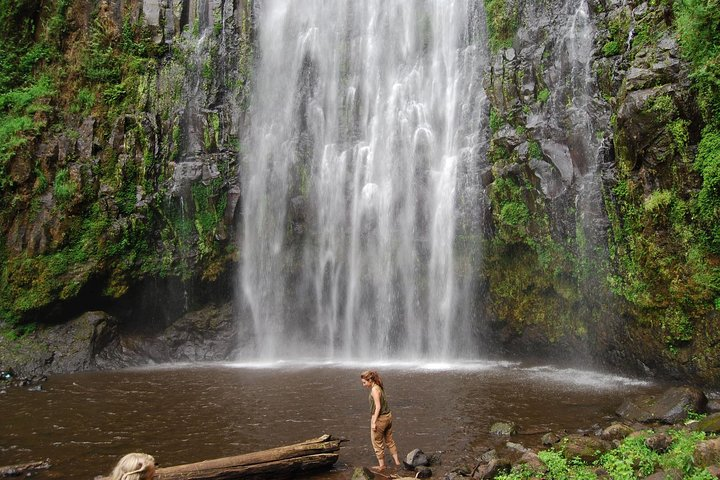
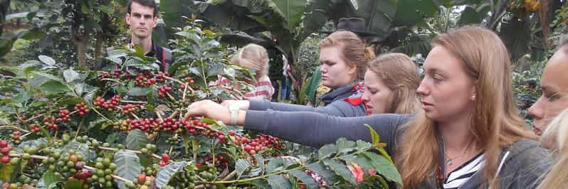

Experience Highlights
Embark on an unforgettable journey through Tanzania's stunning natural landscapes with this action-packed day tour combining breathtaking waterfalls, cultural immersion, and relaxing hot springs. Perfect for active travelers seeking both adventure and cultural connection.
Begin with a scenic hike to the majestic Materuni Waterfalls, followed by a visit to a traditional coffee farm to learn about Tanzania's famous coffee production. Complete your day with a rejuvenating soak in the natural Kikuletwa Hot Springs, surrounded by lush vegetation.
What to Expect
Waterfall Adventure: Trek through beautiful landscapes to reach the stunning Materuni Waterfalls, where you can take a refreshing swim in the Kikuletwa Hot Springs natural pool.
Coffee Culture: Participate in a hands-on coffee-making demonstration at a local farm, learning traditional Chagga methods.
Hot Springs Relaxation: Unwind in the crystal-clear waters of Kikuletwa's natural springs, surrounded by fig trees and wildlife.
Cultural Connection: Enjoy authentic local cuisine and learn about Chagga traditions from your knowledgeable guide.
Why This Tour Stands Out
Perfect blend of adventure, culture, and relaxation in one day
Small group experience with personalized attention
Support local communities through sustainable tourism
Knowledgeable English-speaking guides
Convenient hotel pickup and drop-off from Arusha/Moshi
Whether you're looking to stretch your legs on scenic trails, immerse yourself in local traditions, or simply relax in nature's spa, this Materuni and Kikuletwa day tour offers the perfect balance of activities. Book now for an authentic Tanzanian experience you'll never forget!
Ready to Book Your Adventure?
Trip Itinerary
Trip Itinerary
Materuni Waterfalls
Your adventure begins with morning pickup from your Arusha or Moshi hotel by our friendly English-speaking guide. We'll drive approximately 1 hour to the picturesque Materuni Village, home to the Chagga people and nestled at the foothills of Mount Kilimanjaro.
After registering at the village office, we'll begin our hike to the spectacular Materuni Waterfalls. The 40-minute walk takes us through lush vegetation, with your guide sharing insights about local flora, fauna, and Chagga culture along the way. The trail offers breathtaking views of the surrounding landscape and, on clear days, glimpses of Kilimanjaro's snow-capped peak.
Arriving at the falls, you'll be awed by the 80-meter cascade plunging into a crystal-clear pool. This is your chance for a refreshing swim (don't forget your swimwear!) and spectacular photo opportunities. After taking in the majestic scenery, we'll return to the village where a delicious traditional Chagga lunch awaits, complete with the option to sample local banana beer.

Coffee Experience
Post-lunch, we'll visit a local coffee farm for an immersive coffee-making experience. You'll learn about the entire process - from bean cultivation to roasting - and even get to participate in traditional grinding methods accompanied by Chagga songs and dances. The experience culminates with tasting the fresh coffee you helped prepare, enjoyed with stunning views of the rainforest.
Kikuletwa Hot Springs
Our final stop is the magical Kikuletwa Hot Springs (approximately 1 hour 20 minutes drive). These hidden oasis features crystal-clear waters surrounded by ancient fig trees - the perfect place to relax after your active morning. Swim in the refreshing waters, lounge in the sun, or chat with locals at the small bar area. We'll depart in the late afternoon, returning you to your hotel with unforgettable memories of Tanzania's natural wonders.

Included
Excluded
Included
- Round-trip transportation from Arusha/Moshi hotels
- Professional English-speaking guide
- All entrance fees (waterfalls, hot springs)
- Traditional Chagga lunch
- Coffee farm tour and tasting
- Bottled drinking water in vehicle
Excluded
- International flights
- Tanzania visa fees
- Travel insurance (recommended)
- Alcoholic drinks and premium beverages
- Personal expenses (souvenirs, tips, etc.)
- Optional banana beer tasting
Ready to Book Your Adventure?
Activities
Our carefully curated activities offer the perfect mix of adventure, culture, and relaxation, showcasing the best of northern Tanzania's natural beauty and traditions.
Included Activities
-
Materuni Waterfall Hike :
A scenic 40-minute hike through lush vegetation to reach the stunning 80-meter Materuni Waterfalls. Enjoy a refreshing swim in the natural pool and learn about local flora and fauna from your guide.
 -
Chagga Coffee Experience :
Hands-on coffee-making demonstration at a local farm, where you'll learn traditional cultivation, roasting, and grinding methods. The experience includes cultural songs, dances, and tasting the fresh coffee you helped prepare.
 -
Kikuletwa Hot Springs :
Relax in the crystal-clear waters of these natural hot springs, surrounded by ancient fig trees and lush vegetation. Perfect for swimming, sunbathing, or simply unwinding after your active morning.
Cultural Highlights
-
Traditional Chagga Lunch
Enjoy an authentic meal prepared by local villagers, featuring traditional Chagga dishes. Optional banana beer tasting available (additional cost).
-
Village Life Insights
Learn about Chagga traditions, daily life, and history from your knowledgeable guide as you explore Materuni Village and interact with local community members.
Ready to Book Your Adventure?
Trip Gears & Requirements
To ensure your comfort and safety during this active tour, please review the following gear recommendations and travel requirements.
Essential Gear
- Sturdy hiking shoes: Comfortable footwear with good grip for the waterfall trail
- Swimwear & towel: For swimming at both the waterfall and hot springs
- Sun protection: Hat, sunglasses, and high-SPF sunscreen
- Daypack: To carry your essentials during activities
- Reusable water bottle: Stay hydrated throughout the day
- Camera: Capture stunning landscapes and cultural moments
- Light rain jacket: Weather can change quickly in the mountains
Travel Requirements
- Passport: Valid for at least 6 months beyond travel dates
- Tanzania visa: Required for most nationalities (available on arrival or online)
- Yellow fever certificate: Required if arriving from endemic regions
- COVID-19 requirements: Check current regulations before travel
- Binoculars: Optional for wildlife spotting (we can provide if needed)